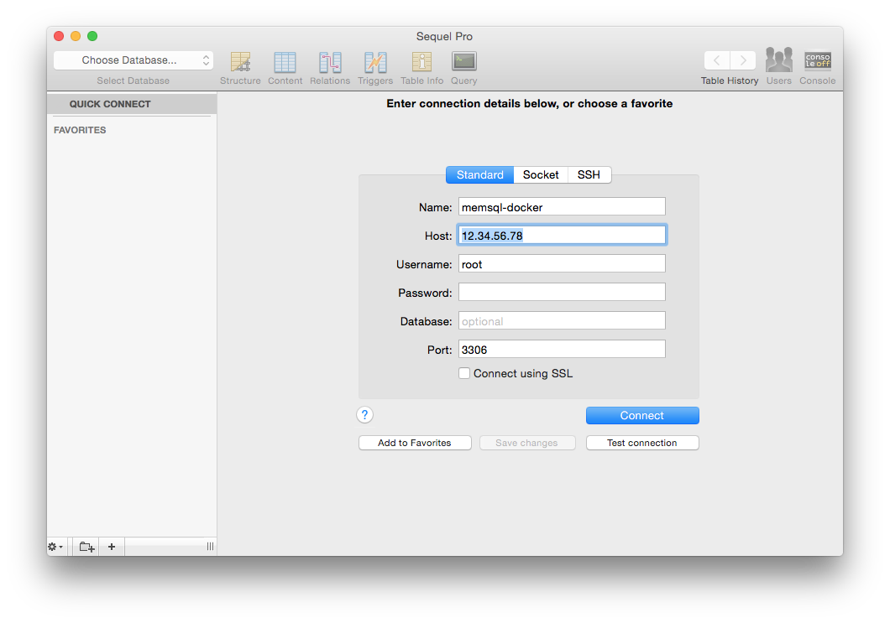
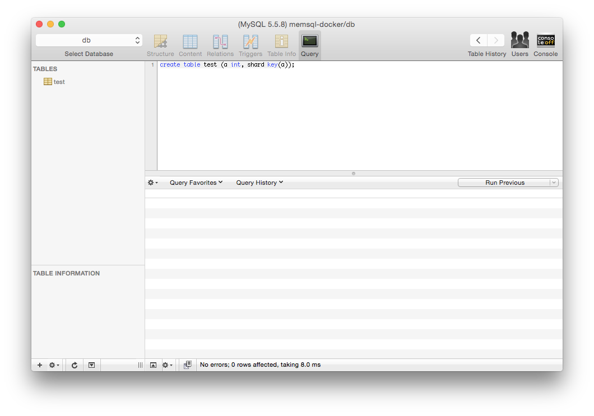
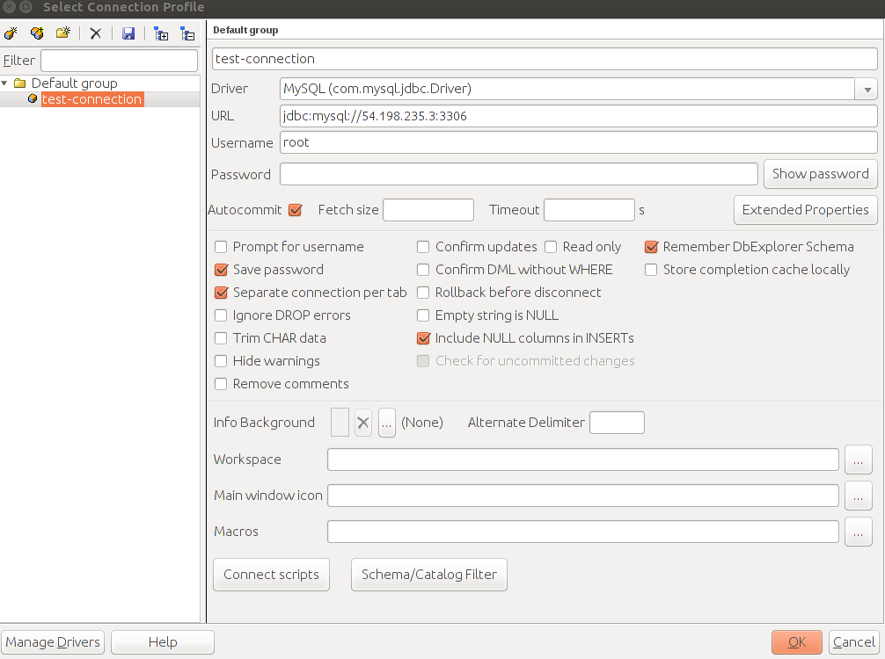
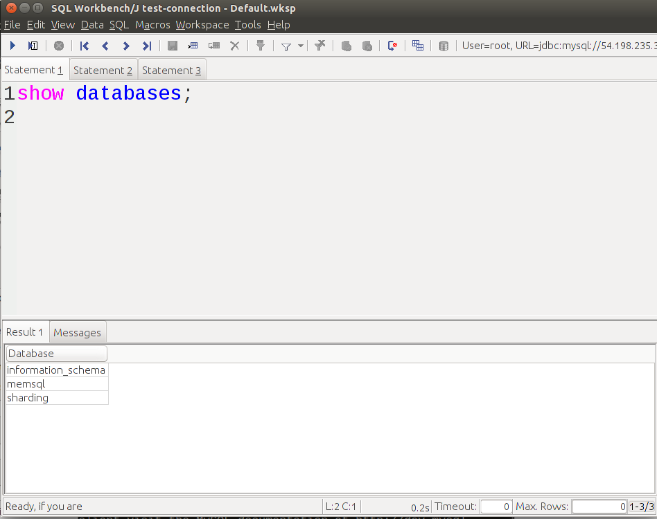
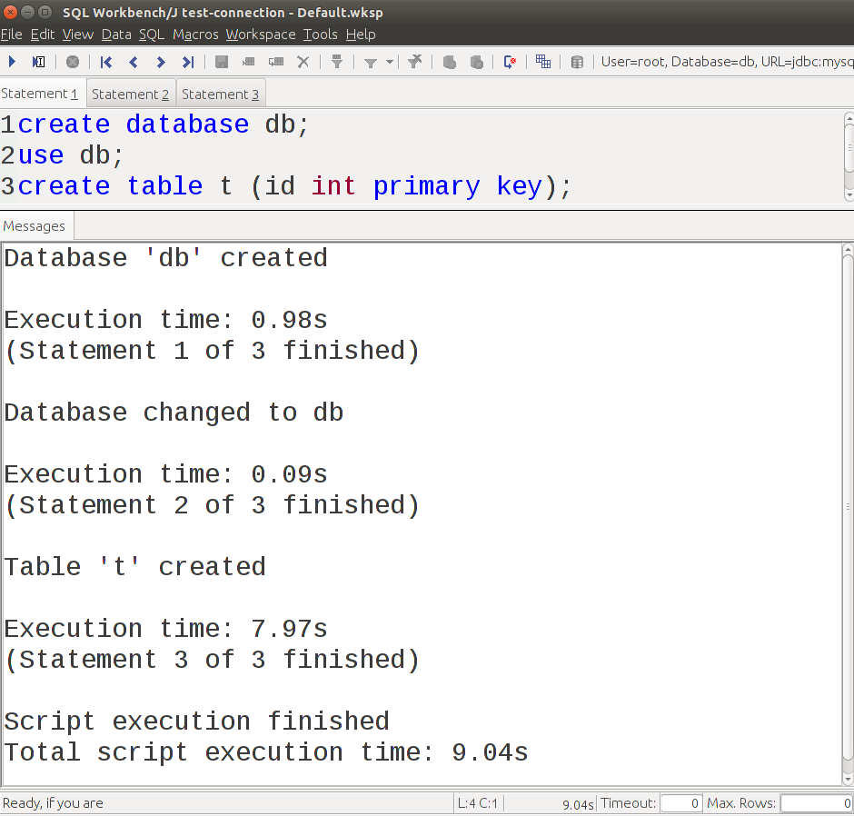
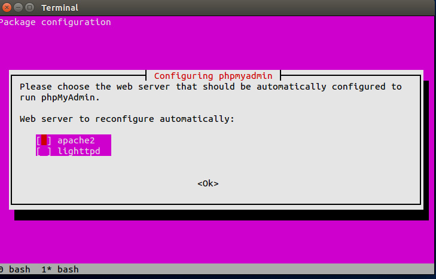
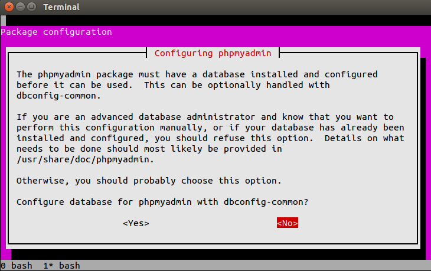
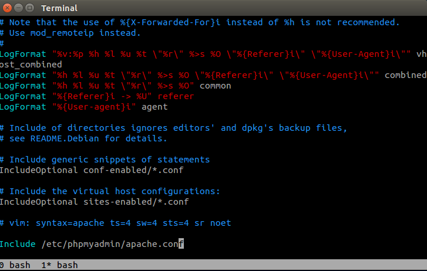
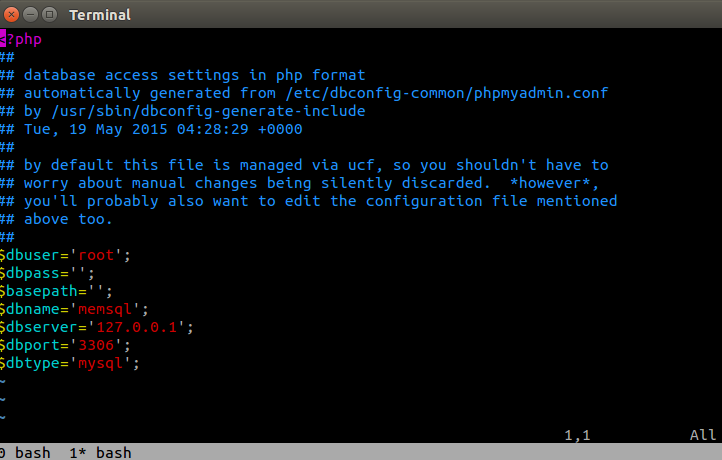
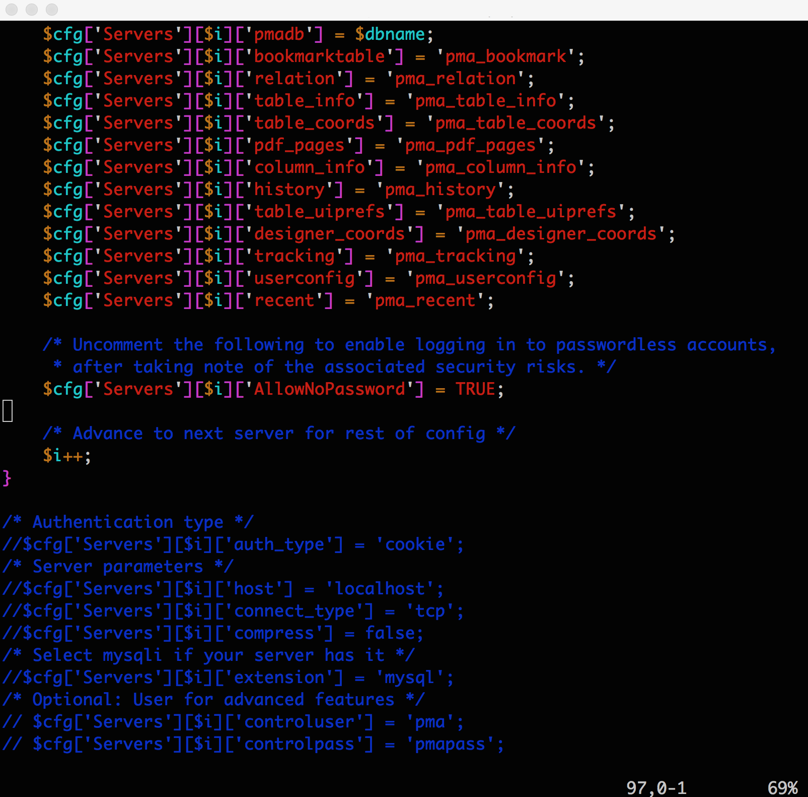

How to Connect to MemSQL¶
This section outlines several ways to connect to MemSQL using popular MySQL-compatible clients and libraries.
MySQL command-line client¶
MemSQL is wire-compliant with MySQL meaning connecting to MemSQL is as easy as connecting to the MySQL database. You may need the -u user, -h host, and -P port flags to ensure you are connecting to MemSQL properly. For example:
$ mysql -u root -h 127.0.0.1 -P 3306
Here we have -u root to specify login as user root, -h 127.0.0.1 to connect to the MemSQL host at localhost, and -P 3306 to connect to MemSQL on port 3306.
Note
If you also have MySQL installed, the mysql client may connect to MySQL instead of MemSQL by default if you do not specify the appropriate host and port options.
You may also use the --prompt flag to change the prompt in the interactive session, simply to help distinguish MemSQL from MySQL:
$ mysql -u root -h 127.0.0.1 -P 3306 --prompt="memsql> "
The output when you connect should look similar to this:
Welcome to the MySQL monitor. Commands end with ; or \g.
Your MySQL connection id is 6
Server version: 5.5.8 MemSQL source distribution (compatible; MySQL Enterprise & MySQL Commercial)
Copyright (c) 2000, 2015, Oracle and/or its affiliates. All rights reserved.
Oracle is a registered trademark of Oracle Corporation and/or its
affiliates. Other names may be trademarks of their respective
owners.
Type 'help;' or '\h' for help. Type '\c' to clear the current input statement.
memsql>
These commands show more information about the connection and the server:
mysql> status
--------------
mysql Ver 14.14 Distrib 5.6.19, for osx10.9 (x86_64) using EditLine wrapper
Connection id: 6
Current database:
Current user: root@127.0.0.1
SSL: Not in use
Current pager: stdout
Using outfile: ''
Using delimiter: ;
Server version: 5.5.8 MemSQL source distribution (compatible; MySQL Enterprise & MySQL Commercial)
Protocol version: 10
Connection: 127.0.0.1 via TCP/IP
Server characterset: utf8
Db characterset: utf8
Client characterset: utf8
Conn. characterset: utf8
TCP port: 3306
--------------
mysql> show databases;
+--------------------+
| Database |
+--------------------+
| information_schema |
| memsql |
| sharding |
+--------------------+
3 rows in set (0.00 sec)
mysql> show variables like '%version%';
+-------------------------+------------------------------------------------------------------------------+
| Variable_name | Value |
+-------------------------+------------------------------------------------------------------------------+
| memsql_version | 4.0 |
| memsql_version_date | Wed May 6 09:07:03 2015 -0700 |
| memsql_version_hash | 0cba132fba0ba7650c1bc9aeec8c1fc381def395 |
| protocol_version | 10 |
| version | 5.5.8 |
| version_comment | MemSQL source distribution (compatible; MySQL Enterprise & MySQL Commercial) |
| version_compile_machine | x86_64 |
| version_compile_os | Linux |
+-------------------------+------------------------------------------------------------------------------+
8 rows in set (0.03 sec)
mysql> show status like '%license%';
+---------------+----------------------------------+
| Variable_name | Value |
+---------------+----------------------------------+
| License_key | 5ca1ab1e000f40aaa6cb67b2ea3ee466 |
| License_type | enterprise |
+---------------+----------------------------------+
2 rows in set (0.00 sec)
mysql> show status like '%cluster_capacity%';
+--------------------------+-------------+
| Variable_name | Value |
+--------------------------+-------------+
| Maximum_cluster_capacity | 10000000 MB |
| Used_cluster_capacity | 107957 MB |
+--------------------------+-------------+
2 rows in set (0.00 sec)
Note
The @@version and @@version_comment global variables are for compatibility with MySQL clients, which expect certain minimum version numbers and strings to be present. To check the real version of MemSQL you are running, use the @@memsql_version variables instead. To check the license you are running, see the license_key and license_type status codes.
For more documentation on the MySQL client, visit the MySQL documentation.
SQLAlchemy¶
Here is a simple example of how to use MemSQL with the SQLAlchemy Python library:
from sqlalchemy import Column, VARCHAR
from sqlalchemy.ext.declarative import declarative_base
from sqlalchemy import create_engine
Base = declarative_base()
class User(Base):
__tablename__ = 'user'
first_name = Column(VARCHAR(200))
last_name = Column(VARCHAR(200), primary_key=True)
engine = create_engine('mysql://root@127.0.0.1')
engine.execute('CREATE DATABASE db')
engine.execute('USE db')
Base.metadata.create_all(engine)
Flask¶
Here is a simple example of how to use MemSQL with the Flask Python framework:
## init_db.py
from flask import Flask, g
from memsql.common import database
app = Flask(__name__)
def get_db():
db = getattr(g, '_database', None)
if db is None:
#Make sure that the arguments correspond to your current MemSQL instance.
db = g._database = database.Connection(host='127.0.0.1', port=3306, user='root')
@app.teardown_appcontext
def close_connection(exception):
db = getattr(g, '_database', None)
if db is not None:
db.close()
if __name__ == '__main__':
app.run()
Make sure that you have MemSQL Python installed and and instance of MemSQL is running. Using the python connector allows for a very simple way to query the database in a Flask app:
@app.route('/')
def databases():
cur = get_db()
return str(cur.query('show databases'))
.sql files can be used to create populate the app with initial schemas:
def init_db():
with app.app_context():
db = get_db()
with app.open_resource('schema.sql', mode='r') as f:
[db.query(q) for q in f.read().split('\n') if q != '']
Execute this function in a python shell:
>>> from flask_demo import init_db
>>> init_db()
Sequel Pro¶
Important
This part of the guide assumes that MemSQL is already running with docker.
Open the latest version of Sequel Pro. You can connect to MemSQL using Quick Connect:
Replace the host field with the IP address of your MemSQL instance. You can find this using the command boot2docker ip. Click Connect.
Select a database by clicking on the Choose Database... field in the top left corner. To create your own new database:
- Select the Query tab.
- Type the query into the field.
- Press Run Previous on the right.
- If this query was executed correctly, the same message should appear on the bottom of the window.
After running a CREATE TABLE query, the tables field on the left side updates:
Hibernate¶
Note
You will need JDBC in your classpath to connect to MemSQL. Make sure you have Hibernate and Maven properly installed.
- Download HibernateTutorial.zip.
- Unzip HibernateTutorial.
- Initialize your database.
CREATE DATABASE test;
USE test;
CREATE TABLE USER (
-> USER_ID INT (5) NOT NULL,
-> USERNAME VARCHAR (20) NOT NULL,
-> CREATED_BY VARCHAR (20) NOT NULL,
-> CREATED_DATE DATE NOT NULL,
-> PRIMARY KEY ( USER_ID )
-> );
- Edit HibernateTutorial/src/main/java/resources/hibernate.cfg.xml to match your MemSQL configuration. For example our user is root with no password. Our database is on localhost on port 3306.
<?xml version="1.0" encoding="utf-8"?>
<!DOCTYPE hibernate-configuration PUBLIC
"-//Hibernate/Hibernate Configuration DTD 3.0//EN"
"http://hibernate.sourceforge.net/hibernate-configuration-3.0.dtd">
<hibernate-configuration>
<session-factory>
<property name="hibernate.dialect">org.hibernate.dialect.MySQLDialect</property>
<property name="hibernate.connection.driver_class">com.mysql.jdbc.Driver</property>
<property name="hibernate.connection.url">jdbc:mysql://localhost:3306/test</property>
<property name="hibernate.connection.username">root</property>
<property name="hibernate.connection.password"></property>
<property name="show_sql">true</property>
<mapping resource="User.hbm.xml"></mapping>
</session-factory>
</hibernate-configuration>
- In HibernateTutorial, run mvn compile.
- In HibernateTutorial/target/classes, run java com.javahash.hibernate.Run.
- Verify that in the MemSQL database test a row has been inserted into USER:
$ mysql -u root -h 127.1 -P 3306 -e 'SELECT * FROM test.USER'
+---------+----------+-------------+--------------+
| USER_ID | USERNAME | CREATED_BY | CREATED_DATE |
+---------+----------+-------------+--------------+
| 1 | James | Application | 2015-05-19 |
+---------+----------+-------------+--------------+
SQL Workbench¶
Once you have SQL Workbench installed open the Connectors window. In the Driver drop-down menu select MySQL (com.mysql.jdbc.Driver). This Driver requires the MySQL Java connector. Once you have Driver selected, enter the URL jdbc:mysql://<host>:<port>. By default MemSQL has one user root with no password, so set username to root and leave password empty. Complete the other fields as desired.
Click OK and the SQL Workbench window will appear. Here you can issue queries in the top window and see results in the bottom window.
 PHPMyAdmin¶
Install Apache2 and PHP5¶
$ sudo apt-get update
$ sudo apt-get install apache2
$ sudo sh -c 'grep -q "^ServerName *localhost$" /etc/apache2/httpd.conf ||
echo "ServerName localhost" >> /etc/apache2/httpd.conf'
$ sudo apt-get install php5 php5-mysql
$ sudo /etc/init.d/apache2 restart
Install PHPMyAdmin¶
$ sudo apt-get install phpmyadmin
The installer will display two dialogs: one dialog asks which webserver you’re using, and the other dialog asks if you want dbconfig-common to automatically configure your database. These dialogs might appear in a different order than is shown here.
For the dialog that asks which webserver you’re using, choose Apache2 and press enter.
For the dialog that asks if you want dbconfig-common to automatically configure your database, choose No and press enter.
Edit /etc/apache2/apache2.conf and add the line “Include /etc/phpmyadmin/apache.conf”
Edit /etc/phpmyadmin/config-db.php to have the following fields set.
$dbuser and $dbpass should be set to the user name and password for connecting to MemSQL. Do not set $dbname to ‘’. If MemSQL is running locally set $dbserver to '127.0.0.1' instead of 'localhost'.
If $dbpass is ‘’ then you need enable the AllowNoPassword option. To do this, open /etc/phpmyadmin/config.inc.php, find the first occurrence of AllowNoPassword, and uncomment that line.
{kind=link}
Finally, restart Apache2:
$ sudo /etc/init.d/apache2 restart
Using PHPMyAdmin¶
Congrats! You have now installed PHPMyAdmin backed by MemSQL. Connect to PHPMyAdmin by visiting http://hostname/phpmyadmin. Enter the user name and password for connecting to MemSQL (same as $dbuser and $dbpass from /etc/phpmyadmin/config-db.php).
Ruby On Rails¶
Configuring MemSQL¶
Open config/database.yml and edit the development adapter to use MySQL. You will need to have the MemSQL socket which can be found using the query show variables like 'socket'.
$ mysql -u root -h 127.1 -P 3306 -e "show variables like 'socket'"
+---------------+---------------------------------------------------------------------------------------+
| Variable_name | Value |
+---------------+---------------------------------------------------------------------------------------+
| socket | /var/lib/memsql-ops/data/installs/MI85eaf8fca04849888be7f1a9a596210e/data/memsql.sock |
+---------------+---------------------------------------------------------------------------------------+
development:
adapter: mysql2
encoding: utf8
database: blog_development
pool: 5
username: root
password:
socket: /var/lib/memsql-ops/data/installs/MI85eaf8fca04849388be7f1a9a596210e/data/memsql.sock
Querying Your Database¶
MemSQL can be queries using the mysql2 connector in controller code. Calling execute returns a mysql2 result which can be converted to an array and easily displayed:
class WelcomeController < ApplicationController
def index
render plain: ActiveRecord::Base.connection.execute('show databases').to_a.join(' ')
end
end